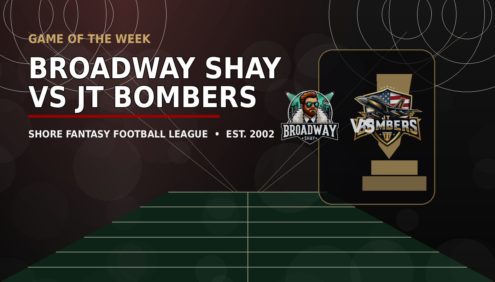
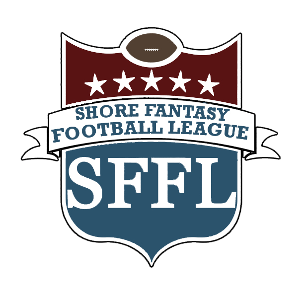
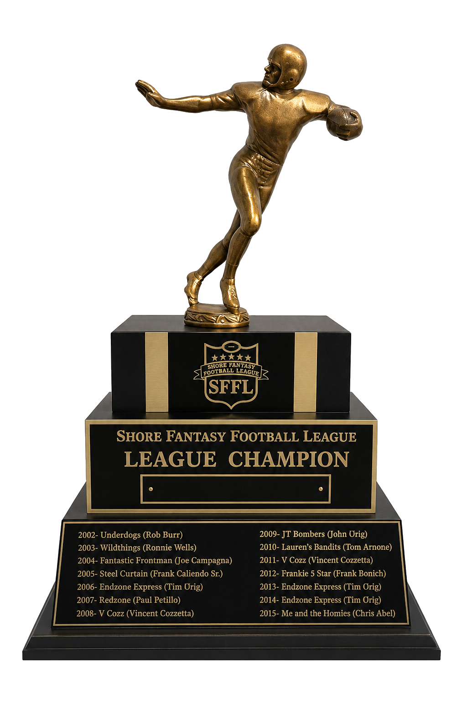
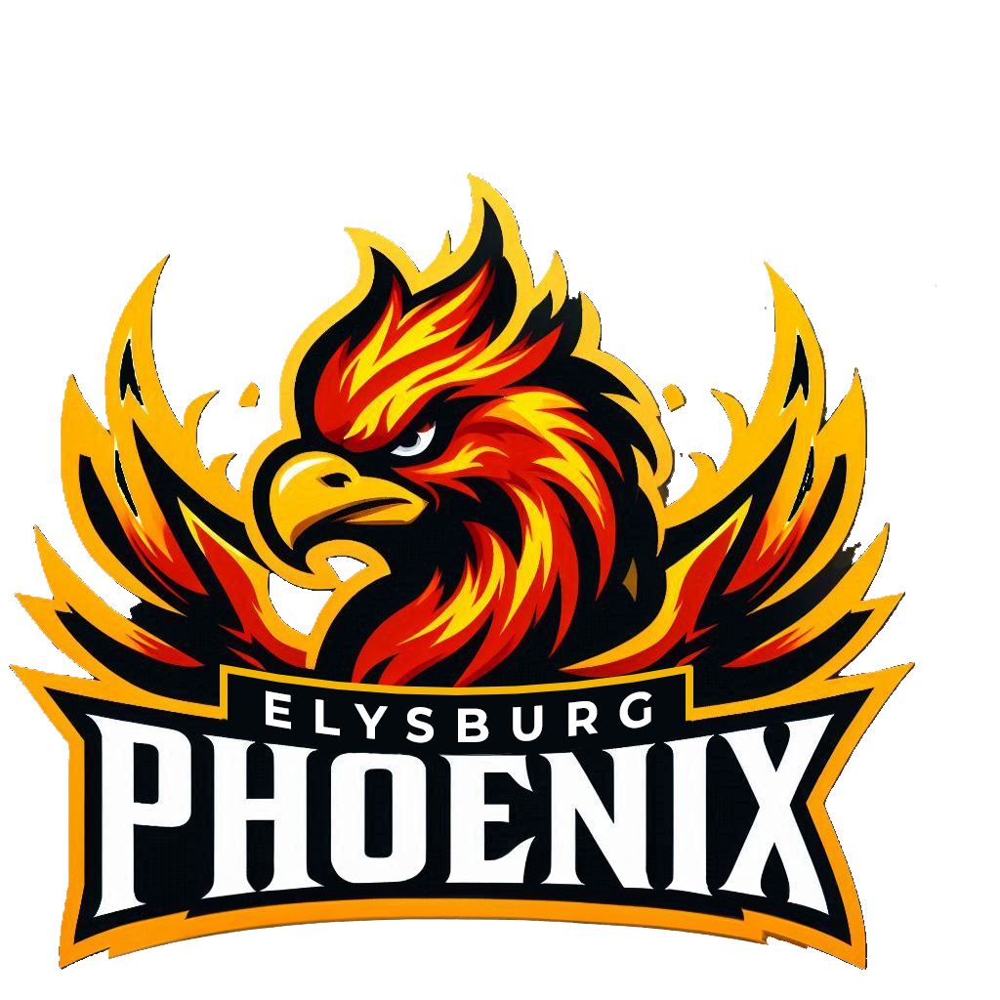

Game of the Week
Phoenix and Bombers meet with the No. 1 seed in sight
Two brands, one playoff statement, and a championship-level stage.

SFFLEST. 2002The official league front page
The standings are tightening, the contenders are spending, and the trophy has become the only story that matters.


Two brands, one playoff statement, and a championship-level stage.
Standings
| # | Franchise | W | L | Strk |
|---|---|---|---|---|
| 1 | JT Bombers | 7 | 2 | W4 |
| 2 |  Phoenix | 6 | 3 | W2 |
| 3 | Broadway Shay | 6 | 3 | L1 |
| 4 | Endzone Express | 5 | 4 | W1 |
Demo Pulse
Bandits are calling contenders about a late-season points upgrade.
Phoenix waits on a game-time decision that could swing the matchup.
Bombers hold the top line, but the gap is finally closing.
Coaches are selling calm while the playoff race tightens.
Championship Timeline
Hall of Fame Museum
The SFFL is more than weekly matchups. It is records, grudges, dynasties, near-misses, trophies, and names that refuse to disappear.
Enter the Hall